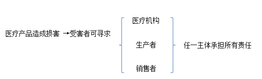

|
|
|


|
|
|||||||||||||
|
|||||||||||||
|
从司法实践中探索医疗侵权纠纷的现状
发布时间：2018-1-18 9:38:28
作者：朱冠华 前言 ： 医患纠纷是一个社会问题。随着现代社会的发展，生活方式的变化，医疗体制的市场化发展，人们对医疗方面的要求也在逐步提高。因为“人命关天”，在医疗的每个环节，包括从医疗产品的生产、销售到临床医疗，都需要严谨而精确的把关和操作，否则可能将为患者带来严重的不利后果。 在医患关系中，患者是处于绝对的弱势地位的。专业信息的不对等，使得患者不得不完全相信医方；因将自己的人身健康交付与他人的风险太大，所以国家在法律上制定了一系列的规定，使得医方在风险承担方面占较大的比重，严重者甚至入刑，以此平衡与患者之间的不对等关系。近年来，随着人民的法律意识不断提高，医疗纠纷案件与日俱增，索赔金额也在不断上涨，司法实践中的严峻形势时刻提醒着医疗体系要完善发展，刻不容缓。 相关的法律规定： 我国侵权责任法第五十九条规定：“因药品、消毒药剂、医疗器械的缺陷，或者输入不合格的血液造成患者损害的，患者可以向生产者或者血液提供机构请求赔偿，也可以向医疗机构请求赔偿。患者向医疗机构请求赔偿的，医疗机构赔偿后，有权向负有责任的生产者或者血液提供机构追偿。”即是说，在医疗产品所导致的责任中，医疗机构、医疗机构产品的生产者、销售者对患者承担“不真正的连带责任”，即患者在损害发生后，可选择任一医疗产品环节中的主体索赔，而在对患者赔偿后，承担责任的一方再向真正的责任主体索赔。
示意图：  承担责任的主体→寻求真正有过错的主体承担 而我国民事诉讼法亦对医疗纠纷中医方的举证责任进行了限制。一般民事纠纷中，作为原告，需要在诉讼中负主要的举证责任，“谁主张谁举证”，此原则是为了防止滥诉。而在医疗纠纷中，患方作为原告方，其承担的举证责任倒置到医方一边，即医方相较一般被告，需要承担更多责任。 示意表格： 举证责任（承担不利后果）：
2017年12月14日施行的《最高人民法院关于审理医疗损害责任纠纷案件适用法律若干问题的解释》，明确了患者主张医疗机构承担赔偿责任的，应当提交到医疗机构就诊、受到损害的证据。《解释》共二十六条，分为适用范围、当事人主体资格的确定、举证责任、鉴定程序、责任承担、附则等六部分，对裁判标准进行统一化规定。《解释》的发布实行，对于实践中解决复杂的纠纷现状有很大的帮助，是医疗损害纠纷的进一步法制化发展的体现。
案例分析： 案情： 2000年4月1日，原告高某到被告金沙医院接受OK镜片近视治疗，被告金沙医院的李医生帮助原告试戴OK镜片，向原告说明了使用方法和注意事项，并向其发给《患者手册》。经四次复诊后，原告右眼不适加重，李医生给予药物治疗后，炎症未能控制，原告眼睛不能睁，出现角膜溃疡，有脓性分泌物附着。同年5月4日至5月7日，原告转往广州市中山医科大学眼科中心眼科医院门诊诊治， 8日，原告被收入该院住院治疗，16日出院，出院诊断证明书诊断原告为戴OK镜后诱发绿脓杆菌性右角膜溃疡。 两被告提供给原告高某使用的OK镜片和OK镜专用护理液的外观包装均无中文标识，且未经我国国家药品监督管理局审查办理进口医疗器械注册，被告欧剋公司不能指明销售产品的生产者。被告欧剋公司的经营范围包括：眼镜的购销及其他国内商业、物资供销业（不含专营、专控、专卖商品）。
审判： 南海法院经审理认为，原告向被告金沙医院购买OK镜片及护理液用于治疗近视，该OK镜片及护理液是被告金沙医院向被告欧剋公司购买的，故两被告均应视为销售者。原告与两被告间形成消费者和销售者的法律关系。两被告向原告销售的OK镜片及护理液未经我国国家药品监督管理局审查办理进口医疗器械注册，且外观包装无中文标识，违反了我国进口医疗器械注册制度，也违反《中华人民共和国产品质量法》第二十七条对产品或者其包装上的标识的有关规定，构成该法第四十六条所指的“缺陷”，因此，本案讼争的OK镜片及护理液是具有缺陷的产品。 依照《中华人民共和国民法通则》第一百一十九条、《中华人民共和国产品质量法》第四十四条、《中华人民共和国消费者权益保护法》第十一条、第四十一条规定的损害赔偿范围，根据《广东省实施＜中华人民共和国消费者权益保护法＞办法》规定的赔偿数额计算标准，原告请求两被告赔偿精神损害赔偿金即精神损害抚慰金符合法律规定。依照《最高人民法院关于确定民事侵权精神损害赔偿责任若干问题的解释》第十条所规定赔偿数额据以确定的因素，原告请求两被告赔偿精神损害赔偿金偏高，本院不予全额支持。
为此南海法院作出如下判决： 一、被告南海市金沙镇医院应于本判决发生法律效力之日起十日内退还原告高某购买OK镜片及护理液的支出费用2800元。 二、被告深圳市欧魁医疗器械有限公司应赔偿原告高某产品责任损害赔偿款85691．48元，于本判决发生法律效力之日起十日内赔付。 三、被告南海市金沙镇医院对上列第二项承担连带赔偿责任。 四、驳回原告其他诉讼请求。
由本案可看出，在医疗产品所造成的损害纠纷的司法实践中，产品销售者对受害者应当承担连带责任。作为医疗产品的销售者，法律对其的要求严格于其他普通产品的销售者。因此，作为医疗行业中举足轻重的一环，医疗产品销售方应当对自身工作负有更重的责任心。 （案例来源：中国司法案例网）
结语： 患者数量的增多与法律意识的提高，国家法律法规的严格规定，市场监管日益强化，无时无刻不在给医疗行业带来新的巨大挑战。在医疗体制市场化的今天，如何能在优胜劣汰的环境中生存与发展，是每个行业主体应思考的问题。 对于每个从事与医疗行业有关的人员来说，对工作认真负责即是对生命负责。依法从事医疗工作，最大程度保证产品的质量，是我们应当努力的方向。
|
|